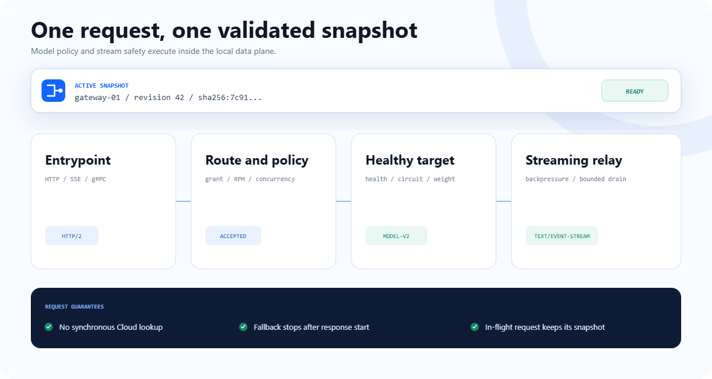

STREAMING PROTOCOLS
AI NATIVE TRAFFIC LAYER / RUST
AI Native
Traffic Layer.
AI Native
流量层。
A3S Gateway routes HTTP, SSE, WebSocket, gRPC, TCP, and UDP to healthy backends. It applies routing, middleware, limits, and model grants from one local configuration snapshot.
A3S Gateway 将 HTTP、SSE、WebSocket、gRPC、TCP 和 UDP 请求路由到健康后端，并从一个本地配置快照执行路由、中间件、限流和模型授权。
HTTP · SSE · WSgRPC · TCP · UDPACL OR CLOUD
$ curl /v1/chat/completions
- 01match routemodels
- 02enforce policyaccepted
- 03choose healthy targetmodel-v2
- 04relay response bodystreaming
$ edit gateway.acl
candidate→validate→reject✓ revision 42 stays active · listeners stay bound
no partial policy · no bad cutover · no dropped stream
$ A3S Cloud → complete snapshot
- 01identity + revision + digestverified
- 02compare-and-swapapplied
- 03instance readinessexact
- 04serve locallyno round trip
06traffic protocols流量协议
04balancing strategies负载均衡策略
15middleware types中间件类型
02desired-state modes期望状态模式
REQUEST PATH
How Gateway handles a request
Gateway 如何处理请求
Gateway matches the route, runs middleware and admission checks, selects a healthy target, and relays the response. Each request keeps the configuration snapshot that was active when it started.
Gateway 匹配路由，执行中间件和准入检查，选择健康目标，然后转发响应。每个请求在整个生命周期内使用启动时的配置快照。

FEATURES
Traffic and policy features
流量与策略功能
The runtime handles streaming protocols, backend health, configuration reloads, middleware, and OpenAI-compatible endpoints.
运行时提供流式协议转发、后端健康检查、配置热更新、中间件和 OpenAI 兼容端点。
CONFIG RELOAD
Validate before activation
激活前校验
Listener, middleware, health-check, and reference errors are rejected before a new snapshot becomes active.监听器、中间件、健康检查和引用错误会在新快照激活前被拒绝。BACKEND SELECTION
Health and failover
健康检查与故障转移
Active and passive health checks, four balancing strategies, circuit breakers, failover, and fallback before the response starts.支持主动与被动健康检查、四种均衡策略、熔断、故障转移和响应开始前的 fallback。OPENAI API
Models · Chat · Completions · Embeddings
Local authentication, model grants, RPM, burst and concurrency limits, model rewriting, request identities, and ordered healthy targets.支持本地鉴权、模型授权、RPM、突发与并发限制、模型重写、请求身份和有序健康目标。GET /v1/modelsPOST /v1/chat/completionsPERFORMANCE BASELINE
Measured internal cost
已测量的内部开销
Criterion measures route matching, middleware processing, and complete ACL parsing. Results are generated by CI from the linked commit and include the runner identity and 95% confidence interval.
Criterion 测量路由匹配、中间件处理和完整 ACL 解析。结果由 CI 从所列提交生成，并记录运行器信息与 95% 置信区间。
ROUTE MATCH
199.3 nsHighest-priority match
最高优先级匹配
1,000 configured routes1,000 条已配置路由 95% CI 198.4–200.5 nsROUTE SCAN
29.484 µsNo matching route
无匹配路由
1,000-route full scan1,000 条路由完整扫描 95% CI 29.445–29.506 µsMIDDLEWARE
1.730 µsRequest pipeline
请求处理链
10 middleware entries10 个中间件条目 95% CI 1.729–1.731 µsCONFIGURATION
6.800 msComplete ACL parse
完整 ACL 解析
300 services and routes300 个服务与路由 95% CI 6.769–6.818 msScope: in-process microbenchmarks, not end-to-end requests per second. Socket, TLS, upstream, response body, and client costs are excluded.
范围：进程内微基准，不是端到端每秒请求数。测试不包含 socket、TLS、上游、响应 body 和客户端开销。
- COMMIT
bd56487- RUNNER
- Ubuntu 24.04 · 4 vCPU · 15.6 GiB
- CPU
- AMD EPYC 7763
PRODUCT SCOPE
What A3S adds to a general-purpose gateway
A3S 在通用网关基础上增加什么
NGINX, Envoy, Traefik, and HAProxy are mature general-purpose gateways. A3S Gateway focuses on AI request policy and long-lived model traffic; it is not presented as a universal replacement.
NGINX、Envoy、Traefik 和 HAProxy 都是成熟的通用网关。A3S Gateway 聚焦 AI 请求策略与长连接模型流量，并不宣称替代所有通用网关场景。
| Area领域 | General-purpose gateways通用网关 | A3S Gateway |
|---|---|---|
| Transport proxying传输代理 | Mature HTTP, gRPC, TCP, health, and load-balancing implementations; often a broader edge ecosystem.成熟的 HTTP、gRPC、TCP、健康检查和负载均衡实现，通常拥有更广泛的边缘生态。 | HTTP, SSE, WebSocket, gRPC, TCP, and UDP. Protocol support is baseline capability, not the differentiator.支持 HTTP、SSE、WebSocket、gRPC、TCP 和 UDP。协议支持是基础能力，并非差异点。 |
| AI request policyAI 请求策略 | Usually composed from routes, filters or plugins, external authorization, and a separate model catalog.通常通过路由、过滤器或插件、外部鉴权和独立模型目录组合实现。 | Built-in OpenAI endpoints, model grants and rewriting, RPM, burst and concurrency admission, plus request and attempt identities.内置 OpenAI 端点、模型授权与重写、RPM、突发与并发准入，以及请求和尝试身份。 |
| Streaming lifecycle流式生命周期 | Streaming is supported through generic buffering, timeout, connection, and filter controls.通过通用缓冲、超时、连接和过滤器控制支持流式传输。 | Separate first-response, idle-stream, and total bounds; response-start-aware fallback; disconnect accounting; bounded drain.独立的首响应、流空闲和总时长边界；感知响应开始的 fallback；断连计量；有界 drain。 |
| State activation状态激活 | Graceful reload or dynamic control-plane updates, with semantics determined by the selected gateway and extensions.支持平滑 reload 或动态控制面更新，具体语义由所选网关及扩展决定。 | One complete ACL or Cloud snapshot is validated and compiled before atomic swap. Rejection keeps the prior snapshot active.完整 ACL 或 Cloud 快照在原子切换前完成校验与编译；拒绝新快照时继续使用旧快照。 |
| Operations boundary运维边界 | Management model varies from local configuration to separate commercial or open control planes.管理方式从本地配置到独立商业或开源控制面不等。 | Gateway has no operator UI. A3S Cloud owns deployment, managed replicas, rollout, tenants, and the long-term usage ledger.Gateway 不提供运维 UI。部署、受管副本、发布、租户和长期用量账本由 A3S Cloud 负责。 |
Comparison baseline:对比依据： NGINX · Envoy · Traefik · HAProxy. The table compares built-in product scope; modules, filters, plugins, Lua, or external control planes can extend general-purpose gateways.表格比较内置产品范围；模块、过滤器、插件、Lua 或外部控制面可以扩展通用网关。
ACL CONFIGURATION
Configuration mapped to runtime behavior
配置项对应的运行时行为
This complete standalone configuration listens on port 8080, matches `/v1`, applies a rate limit, and sends traffic to a health-checked backend. The walkthrough highlights the block used at each stage.
这份完整的 standalone 配置监听 8080 端口，匹配 `/v1`，执行限流，并把流量发送到经过健康检查的后端。动画会依次高亮每个阶段使用的配置块。
gateway.aclVALID ACLmode { kind = "standalone" }
entrypoints "web" {
address = "127.0.0.1:8080"
}
routers "models" {
rule = "PathPrefix(`/v1`)"
service = "models"
entrypoints = ["web"]
middlewares = ["rate-limit"]
}
middlewares "rate-limit" {
type = "rate-limit"
rate = 60
burst = 10
}
services "models" {
load_balancer {
strategy = "least-connections"
request_timeout = "30s"
stream_idle_timeout = "5m"
stream_total_timeout = "60m"
servers = [{ url = "http://127.0.0.1:8000" }]
health_check {
path = "/health"; interval = "10s"; timeout = "5s"
unhealthy_threshold = 3; healthy_threshold = 1
}
}
}Choose the state source
选择状态来源
standalone reads operator-owned ACL. cloud-managed accepts complete desired-state snapshots from A3S Cloud.
standalone 读取运维方维护的 ACL；cloud-managed 接收 A3S Cloud 下发的完整期望状态快照。
Bind the listener
绑定监听器
address opens the local socket. Routers opt into the named web entrypoint.
address 打开本地 socket；路由通过名称选择 web 入口。
Match and assemble the path
匹配并组装请求路径
rule selects `/v1`; the route references one service, listener, and ordered middleware chain. Missing references fail validation.
rule 选择 `/v1`；路由引用一个服务、监听器和有序中间件链。引用缺失会导致校验失败。
Apply admission limits
执行准入限制
rate allows 60 requests per second and burst permits a short queue of 10 tokens.
rate 允许每秒 60 个请求，burst 允许 10 个令牌的短时突发。
Select and monitor backends
选择并监控后端
The service defines balancing, request and stream bounds, upstream URLs, and the thresholds that remove or restore a backend.
服务定义负载均衡、请求与流式超时、上游 URL，以及移除或恢复后端的健康阈值。
ARCHITECTURE
Gateway data plane and A3S Cloud control plane
Gateway 数据平面与 A3S Cloud 控制平面
Gateway handles protocols, routing, middleware, local health checks, and request telemetry. A3S Cloud handles deployment, desired-state distribution, managed replicas, and the long-term usage ledger. Gateway can also run standalone from ACL configuration.
Gateway 负责协议、路由、中间件、本地健康检查和请求遥测。A3S Cloud 负责部署、期望状态下发、受管副本和长期用量账本。Gateway 也可以通过 ACL 配置独立运行。
SOURCEACL / snapshot
→
complete desired statePREPAREValidate + compile
→
fail closedCOMMITAtomic snapshot
revision · digest · readymachine-only Node API · no operator UI
INPUT6 protocols
→
HTTP · SSE · WS · gRPC…ACTIVE SNAPSHOTRoute + policy
→
middleware · grants · limitsOUTPUTHealthy target
model · service · podINSTALL
Install A3S Gateway
安装 A3S Gateway
The shell and PowerShell installers select the platform archive, verify its published SHA-256 checksum and binary version, then install under the current user. Docker, Helm, Cargo, and Rust library integration are also supported.
Shell 和 PowerShell 安装器会选择对应平台的归档文件，校验发布的 SHA-256 和二进制版本，然后安装到当前用户目录。项目也支持 Docker、Helm、Cargo 和 Rust 库集成。
Configuration and first request配置与第一个请求 →$
curl --proto '=https' --tlsv1.2 -LsSf https://a3s-lab.github.io/Gateway/install.sh | shplatform detection · exact SHA-256 · version check平台检测 · 精确 SHA-256 · 版本检查
OPTIONAL CLI INTEGRATIONS
Coding-agent CLI adapters
Coding Agent CLI 适配器
Gateway can discover SKILL.md packages and run supported coding-agent CLIs with argument passthrough. Agent processes and traffic routing use separate runtime paths.
Gateway 可以发现 SKILL.md 包，并通过参数透传运行受支持的 coding-agent CLI。Agent 进程与流量路由使用独立的运行路径。
A3S Code
a3s code exec.a3s/skills
Claude Code
claude --print.claude/skills
OpenAI Codex
codex exec.codex/skills
Gemini CLI
gemini --prompt.gemini/skills
OpenCode
opencode run.opencode/skills
Your CLI
你的 CLI
--command /path/to/agent.agents/skills
IMPLEMENTATION STATUS
Current status
当前状态
Core runtime
核心运行时
Protocols, routing, middleware, health checks, TLS, atomic reload, bounded drain, managed snapshots, OpenAI request paths, telemetry, and local durable usage records.
协议、路由、中间件、健康检查、TLS、原子 reload、有界 drain、受管快照、OpenAI 请求路径、遥测和本地持久用量记录。
Autoscaling and recovery
自动扩缩容与恢复
Standalone scale-to-zero, Kubernetes Scale integration, and complete executor/control-plane recovery.
独立 scale-to-zero、Kubernetes Scale 集成，以及完整的执行器/控制面恢复。
Planned integrations
计划中的集成
Automatic gradual rollout, trusted token accounting, Cloud usage upload and ingestion, cross-product HA gates, and native MCP or remote Agent protocols.
自动渐进发布、可信 token 计量、Cloud 用量上传与接入、跨产品 HA 门禁，以及原生 MCP 或远程 Agent 协议。
GET STARTED